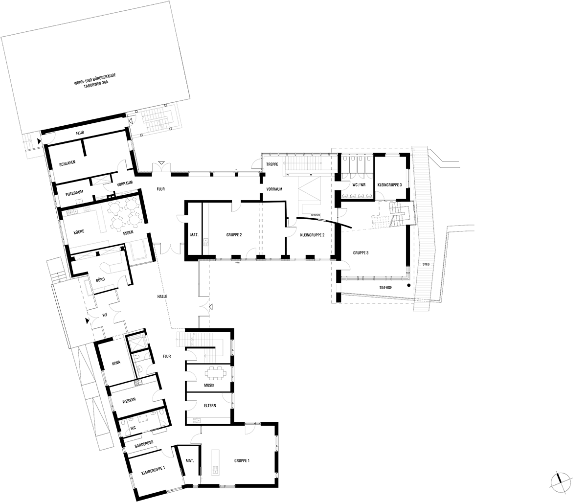
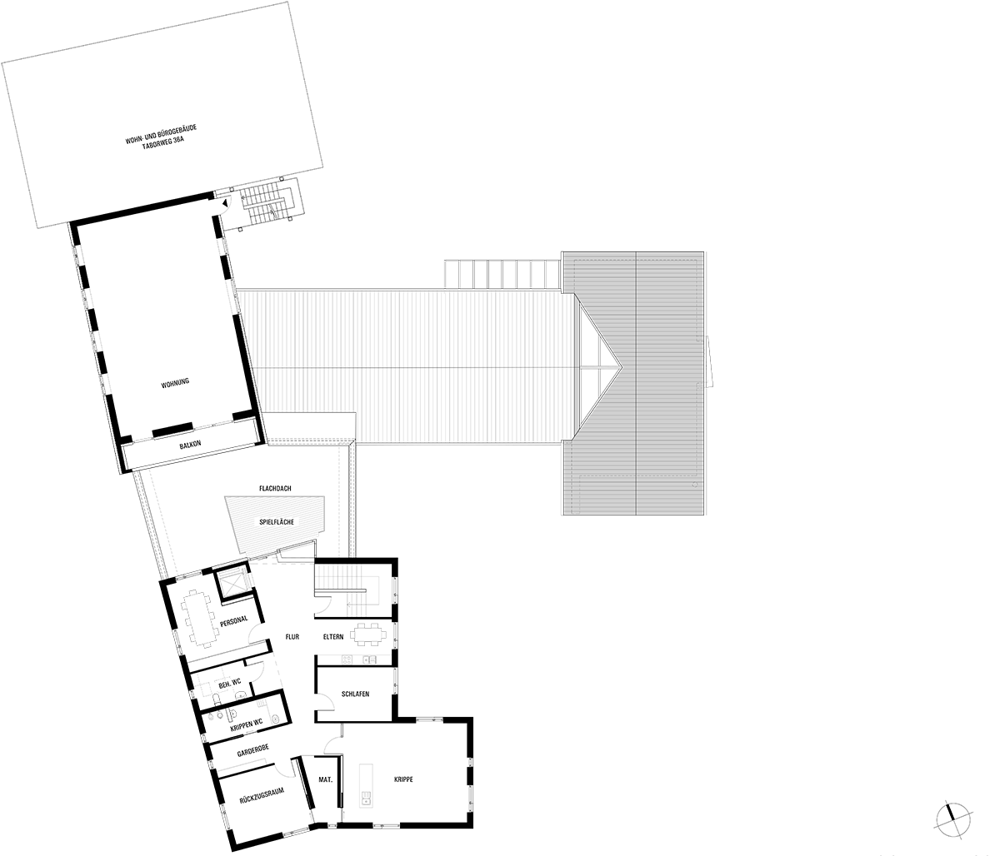
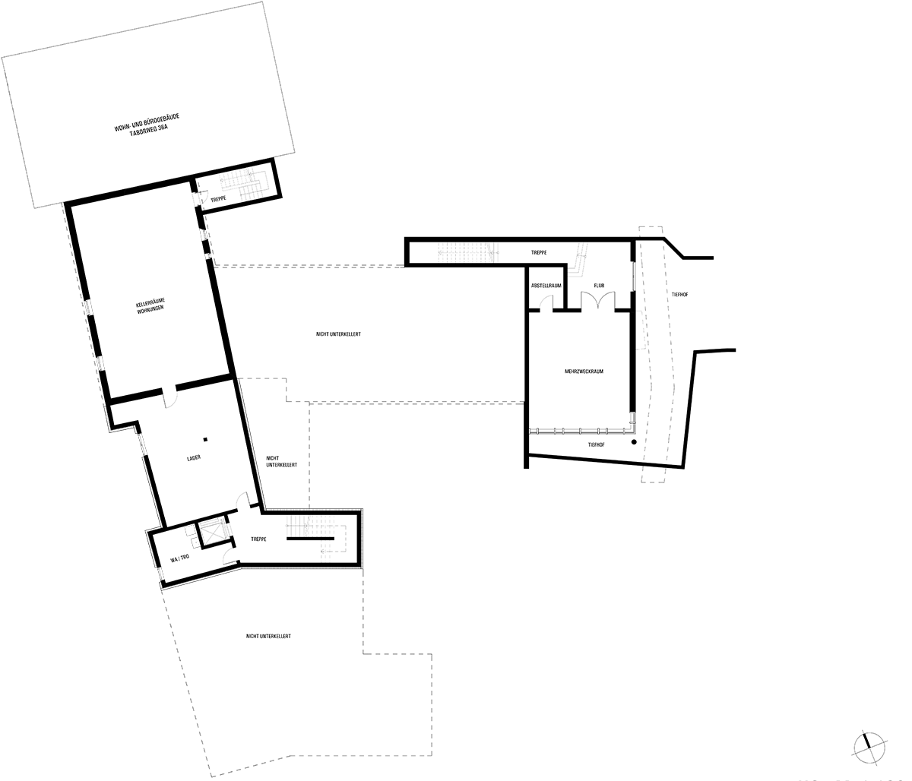

Betreuungsangebot
Ganztagesbetreuung in zwei Kindergartengruppen (3 – 6 Jahre) und in einer Krippengruppe (1 – 3 Jahre) sowie verlängerte Öffnungszeiten.
Zeiten & BeiträgeSeit der Erweiterung 2013 setzen wir unser pädagogisches Konzept auf drei Stockwerken um. Klicken Sie auf die Markierungen, um die einzelnen Bereiche zu entdecken.




Die Bereiche im Bild
Mit Kunst-, Textil-, Bewegungs-, Musik-, Bau-, Theater-, Lese- und Experimentierbereich sowie dem großen Außenspielplatz bleibt auch für das individuelle Spielen und Lernen genügend Raum.
Erfahren Sie mehr
Ganztagesbetreuung in zwei Kindergartengruppen (3 – 6 Jahre) und in einer Krippengruppe (1 – 3 Jahre) sowie verlängerte Öffnungszeiten.
Zeiten & BeiträgeWir sehen Ihr Kind als Individuum, das wir entsprechend seiner persönlichen Entwicklung individuell begleiten und fördern.
Unser Bild vom KindSie möchten einen Platz anfragen, unser pädagogisches Konzept anfordern oder das Kinderhaus besichtigen? Schreiben Sie uns – wir melden uns zurück.